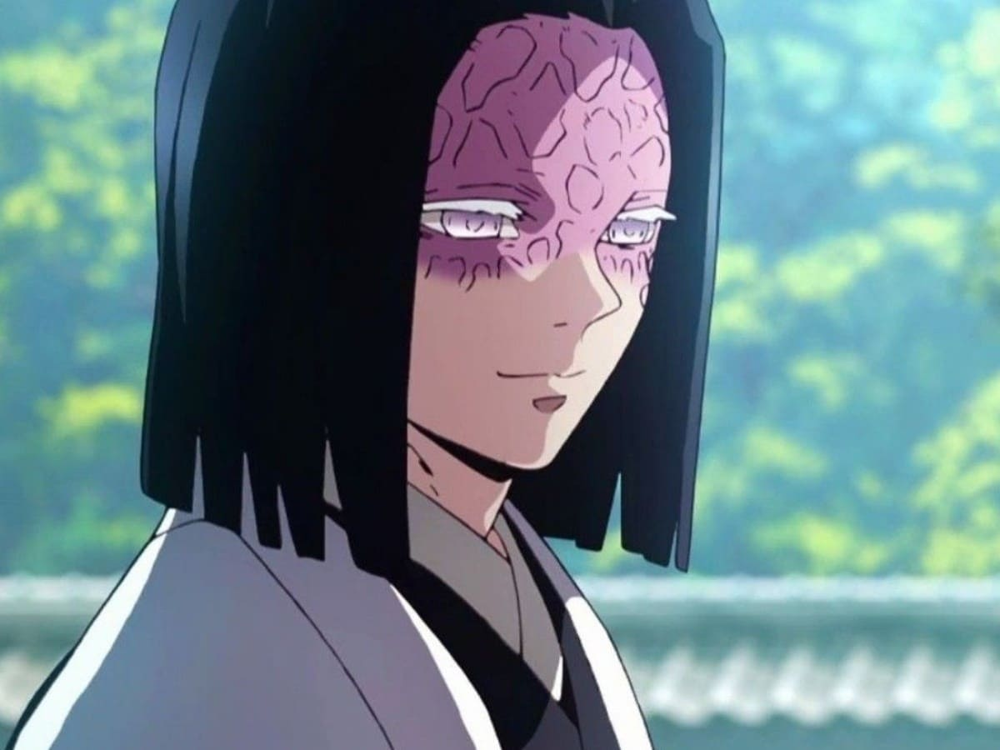
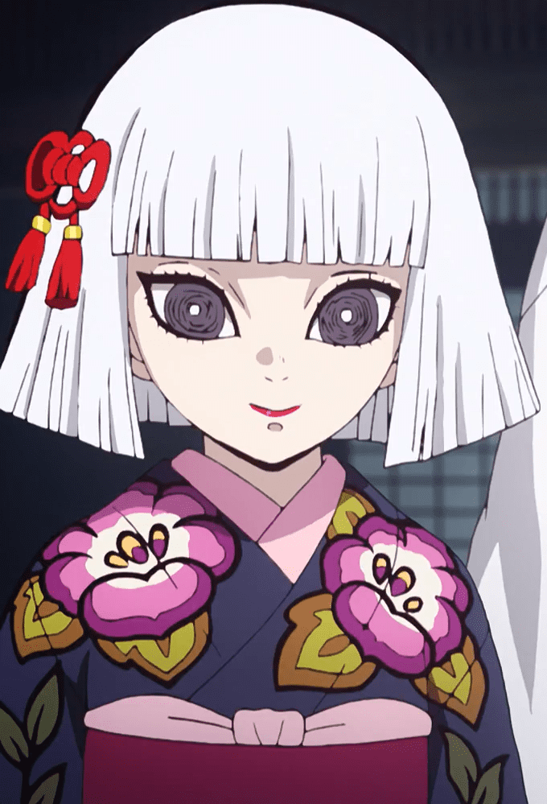
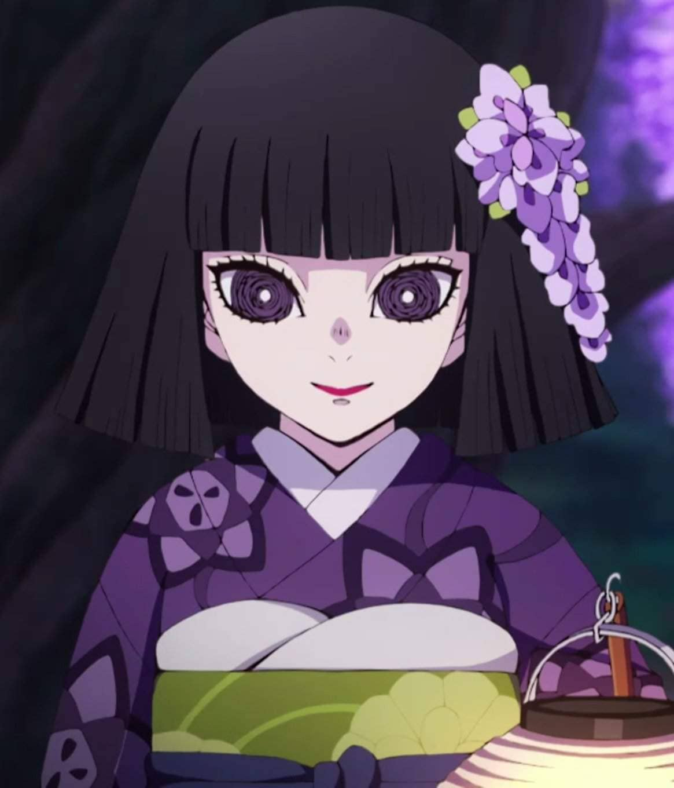

Familia Ubuyashiki
-

Kagaya Ubuyashiki
Kagaya Ubuyashiki (産うぶ屋や敷しき 耀かが哉や, Ubuyashiki Kagaya) fue el 97º líder del Cuerpo de Exterminio de Demonios conocido principalmente como "Oyakata-sama" por sus subordinados y compañeros. Fue el líder del clan Ubuyashiki hasta su ataque suicida contra Muzan Kibutsuji.
-

Hinaki Ubuyashiki
Hinaki Ubuyashiki (産屋敷 雛衣, Ubuyashiki Hinaki) es la hija mayor de Kagaya Ubuyashiki y hermana gemela de Nichika Ubuyashiki. Se quedó hasta al final junto a su padre al igual que su hermana gemela, ambas muriendo junto a él.
-

Kiriya Ubuyashiki
Kiriya Ubuyashiki (産うぶ屋や敷しき 輝き利り哉や, Ubuyashiki Kiriya) es el ultimo líder del Cuerpo de Exterminio de Demonios y él jefe actual de la familia Ubuyashiki.